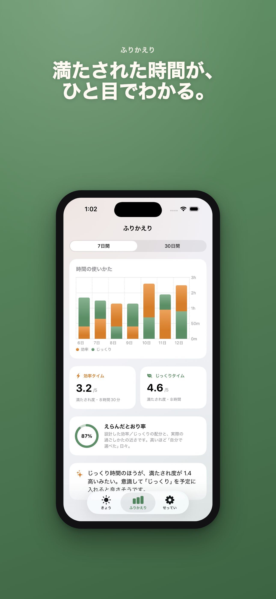
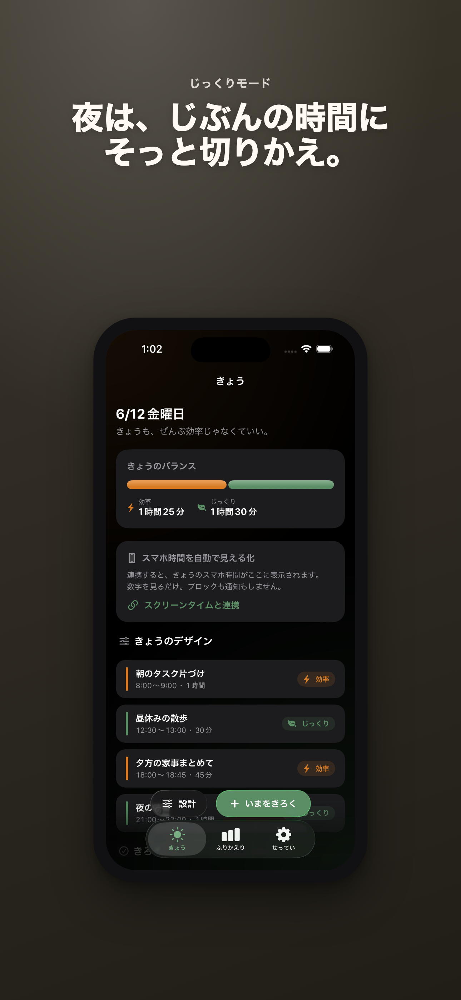

ぜんぶ効率じゃなくていい。
1日の時間を効率タイムとじっくりタイムに分けて、満たされ度つきで記録する時間デザインアプリです。ブロックも説教もせず、自分に合うバランスを見つけます。
App Store公開準備中。ストアURLは審査通過後に追加します。



できること
効率とじっくりを選ぶ予定や行動を2つの時間モードで記録します。
満たされ度で見る速さだけでなく、終わった後の納得感も残します。
オンデバイスアカウント登録なし。記録データは端末内に保存されます。